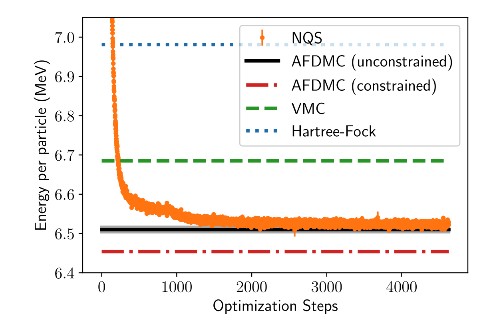

Quantum technologies and machine learning, research and education at the university of Oslo
October 29, 2024
What is this talk about?
The main emphasis is to give you a short introduction to present research and educational initiatives on Quantum Computing, Machine Learning and Quantum Machine Learning at the university of Oslo and collaborators.
These slides and more at http://mhjensenseminars.github.io/MachineLearningTalk/doc/pub/QuantumMLUiO
People
- MHJ, Lasse Vines, Marianne Bathen Etzelm\"u ller, Andrej Kuznetsov, Ed Monakov, Justin Wells, Simon Cooils and David Gongarra (experiment), Joakim Bergli (theory) and Johannes Skaar (theory)
- Subatomic Physics experiment: Heidi Sandaker, Antoine Camper and Ann-Cecilie Larsen
- Many students and postdocs working on theory and experiments (30+)
- Nadia Slavila Larsen, Makoto Yamashita, Alexander M\"u ller-Hermes, Sergiy Neshveyev plus many students
- Large activity on Quantum Information theory, Shannon theory, error correction theory and more
People
- Thomas B. Pedersen, David Balcells, Simen Kvaal, Simen Reine, Ainara Nova Flores
- Many students and postdocs working on theory and links with experiments (20+)
- Franz Fuchs and Johannes Stasik, and the Gemini center on Quantum Computing, see URL"https://www.quantumcomputing.no/"
Other places People
- Francesco Pietro Massel et al. Research on entanglement, quantum measurements, quantum noise and more, see https://www.usn.no/research/our-research/technology/quantum-technology/.
- Experimental activity on Nanoelectronics and Photonics at Department of Electronic Systems
- Excellent condensed matter theory group at the Department of Physics
- OsloMet and Simula lab@Oslo
Education and advanced training
- Outreach and communication on quantum technologies and AI, explaining quantum technologies and AI to a broader audience
- Research on education in AI and QT. How are these topics best communicated and implemented in different enviroments, from high school education to universities and to a broader audience, including external partners
- QAI-TALENT, Education and knowledge transfer through the development of advanced educational programs
Deliverable: Education and advanced training
- An outreach program on quantum technologies and AI for a broader audience
- Develop an advanced educational and training program on QTs and AI for industry partners in the public and private sectors.
QAI-TALENT, Education and knowledge transfer through the development of advanced educational programs
The QAI-TALENT (\underline{T}raining and \underline{A}dvanced \underline{L}ectures in \underline{E}mergi\underline{N}g \underline{T}echnologies) aims at developing a consistent training and educational program at all levels in QTs and AI, which will facilitate the development of a workforce with the competences and knowledge to meet future technological challenges and developments.
Education, Quantum and AI/Machine Learning
At the university of Oslo we have now established several educational programs in AI and QTs and quantum science. These programs span the whole spectrum from beginners courses to advanced training and education tailored to the specific needs of the participants.
Furthermore, through research done at the center for Computing in Science Education and the physics education research group at the department of physics of the university of Oslo, we have over the years developed knowledge and insights on how to teach central concepts in quantum science as well as developing computational literacy and understanding of central algorithms applied to scientific problems.
Courses and study programs
- New study direction on Quantum technology in Bachelor program Physics and Astronomy, starts Fall 2024. Three new courses:
- FYS1400 Introduction to Quantum Technologies
- FYS3405/4405 Quantum Materials
- FYS3415/4415 Quantum Computing
- Developed Master of Science program on Computational Science, started fall 2018 and many students here work on quantum computing and machine learning
- Developed courses on machine learning, from basic to advanced ones
- Developed advanced course on quantum computing and quantum machine learning, MAT3420, MAT4430/9430, FYS5419/9419
- New study directions in Master of Science in Physics and Computational Science on Quantum technologies and more. Start fall 2025
Content of courses we offer
- Quantum Information theory
- From Classical Information theory to Quantum Information theory
- Classical and Quantum Laboratory
- Discipline-Based Quantum Mechanics
- Quantum algorithms, computing, software and hardware
- Several machine learning/AI courses, at all levels
Structure of courses
These courses address many central concepts, such as quantum mechanical superposition, entanglement, QT applications, and many different methods and algorithms for AI and machine learning, covering both supervised and unsupervised learning as well as central discriminative and generative deep learning methods. Programming is indispensable in all courses and course participants learn to study complicated problems which require knowledge and skills necessary for educating a modern workforce. Many of these courses focus also on teamwork, project management, and communication.
These courses are all regular one-semester university courses, resulting in typically 10 ECTS credits each. The courses can be adapted to single students having full-time jobs. They run however through a whole semester with final evaluations either as projects, take-home exams or final written/oral exams as assessment form.
QAI-TALENT: Education for a broader audience
We have yearslong experience (with research based evidence on what works or not) in developing intensive training courses on ML/AI and QT. We plan to develop an educational activity on quantum science and AI, \textbf{QAI TALENT} (TALENT=Training and Advanced Lectures in EmergiNg Technologies) offering
- Intensive short courses on selected topics (which can lead to credits and certificates)
- Certificates of expertise with modules that can add up to one year of credits or more.
- Possibilities of adding up to a master specialization in quantum science/technologies and/or AI/ML
- Common educational projects and supervision of students
Research directions, not exhaustive
- Theory and experiments for quantum sensors, from standard many-body theories, via machine learning to quantum computing. Close collaboration with Norwegian industry
- Theory and experiments for quantum computing and quantum information theory
- Fundamental studies (theory and experiment) of quantum mechanics
Machine learning research
- Discriminative and generative deep learning applied to the physical sciences (catalysis, subatomic physics experiments quantum many-body theories and much more)
- Solving complicated quantum mechanical many-body systems with deep learning, see references at the end
- Developing new machine learning algorithms with applications to quantum computing as well, see https://arxiv.org/abs/2401.11694
- Predicting solid state material platforms for quantum technologies, Nature Computational Materials https://www.nature.com/articles/s41524-022-00888-3
Quantum computing and quantum machine learning, main activities
How to use many-body theory to design quantum circuits (Quantum engineering)- Many-body methods like F(ull)C(onfiguration)I(nteraction) theory, Coupled-Cluster theory and other with
- Adaptive basis sets
- Time dependence
- Optimization of experimental parameters
- Feedback from experiment
- Finding optimal parameters for tuning of entanglement, see PRX Quantum 5, 030324 (2024)
- Numerical experiments to mimick real systems
- Constructing quantum circuits to simulate specific systems
- Quantum machine learning to optimize quantum circuits, see https://arxiv.org/abs/2403.14406
Candidate systems
- Quantum dots, experiments at UiO and else
- Point Defects in semiconductors, experiments at UiO
- Recent article Coulomb interaction-driven entanglement of electrons on helium, PRX Quantum 5, 030324 (2024), at https://journals.aps.org/prxquantum/abstract/10.1103/PRXQuantum.5.030324
- Superconducting Josephon junctions
- Single photons
- Trapped ions and atoms
- Nuclear Magnetic Resonance
- ...and more
Quantum Engineering
- be scalable
- have qubits that can be entangled
- have reliable initializations protocols to a standard state
- have a set of universal quantum gates to control the quantum evolution
- have a coherence time much longer than the gate operation time
- have a reliable read-out mechanism for measuring the qubit states
- ...more
Electrons (quantum dots) on superfluid helium
Electrons on superfluid helium represent (see https://www.youtube.com/watch?v=EuDuM-fe-lA&ab_channel=JoshuahHeath) a promising platform for investigating strongly-coupled qubits.
A systematic investigation of the controlled generation of entanglement between two trapped electrons under the influence of coherent microwave driving pulses, taking into account the effects of the Coulomb interaction between electrons, may be of great interest for quantum information processing using trapped electrons.
More on experimental setup II

Experimental set up

- (a) Schematic of the microdevice, where two electrons are trapped in a double-well potential created by electrodes 1-7. The read-out is provided by two superconducting resonators dispersively coupled to electron's in-plane motional states.
- (b) Coupling constants from each individual electrode beneath the helium layer.
- (c+d) The electron's energy in a double-well electrostatic potential (solid line). Dashed and dot-dashed lines represent the harmonic approximations of left and right wells respectively.
Quantum dots and the Coulomb interaction
Coulomb interaction governed entanglement can be realized in the system of electrons on the surface of superfluid helium, where qubit states are formed by in-plane lateral motional or out-of plane Rydberg states. Trapped near the surface of liquid helium these states have different spatial charge configurations and the wavefunctions of different electrons do not overlap.
This results in a strong exchange free Coulomb interaction which depends on the states of the electrons. The lack of disorder in the systems also leads to slow electron decoherence, which has attracted interest to the system as a candidate for quantum information processing.
Electrons on helium is another qubit platform
To our knowledge two qubit gates have never been discussed in a proper manner for these systems.
The static Coulomb interaction arises from a virtual photon exchange process between two charge particles according to quantum electrodynamics. This results in a correlated motion of two charges generating quantum entanglement.
Surface state electrons (SSE)
Surface state electrons (SSE) 'floating' above liquid helium originates from quantization of electron's perpendicular to the surface motion in a trapping potential formed by attractive force from image charge and a large \( \sim \) 1 eV barrier at the liquid-vacuum interface. At low temperatures the SSE are trapped in the lowest Rydberg state for vertical motion some 11 nm above the helium surface, which is perfectly clean and has a permittivity close to that of vacuum.
The weak interaction with rthe enviroment, which is mainly governed by interaction with quantized surface capillary waves (ripplons) and bulk phonons, ensures long coherence times - a vital ingredient for any qubit platform.
Calculational details
Hamiltonian:
$$
\begin{align}
\hat{H} &=\frac{\hat{p}_1^2}{2} + \sum_{i = 1}^7 V_i\alpha_i[\hat{x}_1] + \frac{\hat{p}_2^2}{2} + \sum_{i = 1}^7 V_i\alpha_i[\hat{x}_2] + \frac{\kappa}{\sqrt{(\hat{x}_1-\hat{x}_2)^2 + a^2}}
\tag{1}\\
&= h[\hat{p}_1,\hat{x}_1] + h[\hat{p}_2,\hat{x}_2] + u[\hat{x}_1,\hat{x}_2]
\tag{2}
\end{align}
$$

Calculational details
Hamiltonian:
$$
\begin{align}
\hat{H} &= \frac{\hat{p}_1^2}{2} + v[\hat{x}_1] + \frac{\hat{p}_2^2}{2} + v[\hat{x}_2] + \frac{\kappa}{\sqrt{(\hat{x}_1-\hat{x}_2)^2 + a^2}}
\tag{3}\\
&= h[\hat{p}_1,\hat{x}_1] + h[\hat{p}_2,\hat{x}_2] + u[\hat{x}_1,\hat{x}_2]
\tag{4}
\end{align}
$$

Calculational details
Hamiltonian:
$$
\begin{align}
\hat{H} &= \frac{\hat{p}_1^2}{2} + v[\hat{x}_1] + \frac{\hat{p}_2^2}{2} + v[\hat{x}_2] + \frac{\kappa}{\sqrt{(\hat{x}_1-\hat{x}_2)^2 + a^2}}
\tag{5}\\
&\equiv h[\hat{p}_1,\hat{x}_1] + h[\hat{p}_2,\hat{x}_2] + u[\hat{x}_1,\hat{x}_2]
\tag{6}
\end{align}
$$
Energy states:
$$
\begin{equation}
\vert\Phi_k\rangle = \sum_{i < j} C_{ij, k}\frac{\vert \varphi_i \varphi_j\rangle - \vert \varphi_j \varphi_i\rangle}{\sqrt{2}},
\tag{7}
\end{equation}
$$
(Slater basis)
Calculational details
Hamiltonian:
$$
\begin{align}
\hat{H} &= \frac{\hat{p}_1^2}{2} + v^L[\hat{x}_1] + \frac{\hat{p}_2^2}{2} + v^R[\hat{x}_2] + \frac{\kappa}{\sqrt{(\hat{x}_1-\hat{x}_2)^2 + a^2}}
\tag{8}\\
&\equiv h^L[\hat{p}_1,\hat{x}_1] + h^R[\hat{p}_2,\hat{x}_2] + u[\hat{x}_1,\hat{x}_2]
\tag{9}
\end{align}
$$
Energy states:
$$
\begin{equation}
\vert\Phi_k\rangle = \sum_{i} \sum_{j} C_{ij, k}\vert \varphi^L_i \varphi^R_j\rangle,
\tag{10}
\end{equation}
$$
(product basis)
Calculational details
Energy states:
$$
\begin{equation}
\vert\Phi_k\rangle = \sum_{i} \sum_{j} C_{ij, k}\vert \varphi^L_i \varphi^R_j\rangle,
\tag{11}
\end{equation}
$$
(product basis)

Calculational details
Hamiltonian:
$$
\begin{align}
\hat{H} &= \frac{\hat{p}_1^2}{2} + v^L[\hat{x}_1] + \frac{\hat{p}_2^2}{2} + v^R[\hat{x}_2] + \frac{\kappa}{\sqrt{(\hat{x}_1-\hat{x}_2)^2 + a^2}}
\tag{12}\\
&\equiv h^L[\hat{p}_1,\hat{x}_1] + h^R[\hat{p}_2,\hat{x}_2] + u[\hat{x}_1,\hat{x}_2]
\tag{13}
\end{align}
$$
Energy states:
$$
\begin{equation}
\vert\Phi_k\rangle = \sum_{i} \sum_{j} C_{ij, k}\vert \varphi^L_i \varphi^R_j\rangle,
\tag{14}
\end{equation}
$$
(Hartree basis)
Calculational details
Hamiltonian:
$$
\begin{align}
\hat{H} &= \frac{\hat{p}_1^2}{2} + v^L[\hat{x}_1] + \frac{\hat{p}_2^2}{2} + v^R[\hat{x}_2] + \frac{\kappa}{\sqrt{(\hat{x}_1-\hat{x}_2)^2 + a^2}}
\tag{15}\\
&\equiv h^L[\hat{p}_1,\hat{x}_1] + h^R[\hat{p}_2,\hat{x}_2] + u[\hat{x}_1,\hat{x}_2]
\tag{16}
\end{align}
$$
Energy states:
$$
\begin{equation}
\vert\Phi_k\rangle = \sum_{i = 0}^{N^L} \sum_{j = 0}^{N^R} C_{ij, k}\vert \varphi^L_i \varphi^R_j\rangle,
\tag{17}
\end{equation}
$$
(Hartree basis)
Calculational details
Energy states:
$$
\begin{equation}
\vert\Phi_k\rangle = \sum_{i = 0}^{N^L} \sum_{j = 0}^{N^R} C_{ij, k}\vert \varphi^L_i \varphi^R_j\rangle,
\tag{18}
\end{equation}
$$
(Hartree basis)

Calculational details
Hamiltonian:
$$
\begin{align}
\hat{H} &= \frac{\hat{p}_1^2}{2} + v^L[\hat{x}_1] + \frac{\hat{p}_2^2}{2} + v^R[\hat{x}_2] + \frac{\kappa}{\sqrt{(\hat{x}_1-\hat{x}_2)^2 + a^2}}
\tag{19}\\
&\equiv h^L[\hat{p}_1,\hat{x}_1] + h^R[\hat{p}_2,\hat{x}_2] + u[\hat{x}_1,\hat{x}_2]
\tag{20}
\end{align}
$$
Energy states:
$$
\begin{equation}
\vert\Phi_k\rangle = \sum_{i = 0}^{N^L} \sum_{j = 0}^{N^R} C_{ij, k}\vert \varphi^L_i \varphi^R_j\rangle,
\tag{21}
\end{equation}
$$
(Hartree basis)
Results and discussions
By adjusting the potential we can change the anharmonicities and detuning of the wells.
- What values of these give interesting interactions?
- Inspiration from superconducting qubits, see High-Contrast \( ZZ \) Interaction Using Superconducting Qubits with Opposite-Sign Anharmonicity, Zhao et al Phys. Rev. Lett. 125, 200503
We search for well configurations corresponding to three different types of interaction between the two electrons.
- In configuration I we address both qubits independently and can thereby perform single-qubit state rotations and measurements.
- Configurations II and III correspond to avoided level crossings between two (\( E_{01}, E_{10} \)) and three (\( E_{11}, E_{20}, E_{02} \)) energy levels respectively, where the electrons' motion becomes correlated, that is they are entangled.
Both anharmonicity and detuning changes with the shape of our well. We create a voltage parameterization
$$
\begin{equation}
V(\lambda) = (1-\lambda)V_\mathrm{I} + \lambda V_\mathrm{III}
\tag{22}
\end{equation}
$$
Entanglement and more

Legend to figure
- (a) In this figure we have plotted the transition energy from the ground state to the labeled excited state as a function of the voltage parameter \( \lambda \). The labeled states are the computational basis states when \( \lambda = 0 \).
- (b) The von Neumann entropy of the five lowest excited states of the two-body Hamiltonian as a function of the configuration parameter \( \lambda \). The ground state has zero entropy, or close to zero entropy. We have included the points for the double and triple degeneracy points. \( \lambda_{II} \) and \( \lambda_{III} \) in the figure. The von Neumann entropy is calculated using the binary logarithm.
- (c) In this figure we have plotted the anharmonicites for the left well (\( \alpha^L \)) and the right well (\( \alpha^R \)) as a function of the well parameterization \( \lambda \). We have also included the detuning \( \Delta \omega = \omega^R - \omega^L \) between the two wells. We have marked configuration II at \( \lambda_{II} \approx 0.554 \) and configuration III at \( \lambda_{III} = 1 \).
Particle densities and coefficients

Potential wells, the one-body densities, and single-particle states

Where we are now
- Adding time-dependent studies of two electrons in two wells in one and two dimensions
- Studies of the time-evolution of entangled states (now two electrons only)
- Use theory to find optimal experimental setup
- Expect two-electron system realized experimentally in approx \( 1 \) year, great potential for studies of quantum simulations
Plans
- Add two and three-dimensions in order to simulate in a more realistic way such many-body systems.
- Develop time-dependent FCI code, useful up to approximately 10 particles with effective (and effective Hilbert space) Hamiltonians in two and three dimensions
- Develop codes for studies of entanglement as function of time
- Do tomogrophy and extract density matrix and compare with experiment.
- Study the feasibility of various setups for quantum simulations of specific Hamiltonians such as the Lipkin model
- For larger many-body systems, study for example time-dependent CC theory
Many-body physics, Quantum Monte Carlo and deep learning
Given a hamiltonian \( H \) and a trial wave function \( \Psi_T \), the variational principle states that the expectation value of \( \langle H \rangle \), defined through
$$
\langle E \rangle =
\frac{\int d\boldsymbol{R}\Psi^{\ast}_T(\boldsymbol{R})H(\boldsymbol{R})\Psi_T(\boldsymbol{R})}
{\int d\boldsymbol{R}\Psi^{\ast}_T(\boldsymbol{R})\Psi_T(\boldsymbol{R})},
$$
is an upper bound to the ground state energy \( E_0 \) of the hamiltonian \( H \), that is
$$
E_0 \le \langle E \rangle.
$$
In general, the integrals involved in the calculation of various expectation values are multi-dimensional ones. Traditional integration methods such as the Gauss-Legendre will not be adequate for say the computation of the energy of a many-body system. Basic philosophy: Let a neural network find the optimal wave function
Quantum Monte Carlo Motivation
Choose a trial wave function \( \psi_T(\boldsymbol{R}) \).
$$
P(\boldsymbol{R},\boldsymbol{\alpha})= \frac{\left|\psi_T(\boldsymbol{R},\boldsymbol{\alpha})\right|^2}{\int \left|\psi_T(\boldsymbol{R},\boldsymbol{\alpha})\right|^2d\boldsymbol{R}}.
$$
This is our model, or likelihood/probability distribution function (PDF). It depends on some variational parameters \( \boldsymbol{\alpha} \). The approximation to the expectation value of the Hamiltonian is now
$$
\langle E[\boldsymbol{\alpha}] \rangle =
\frac{\int d\boldsymbol{R}\Psi^{\ast}_T(\boldsymbol{R},\boldsymbol{\alpha})H(\boldsymbol{R})\Psi_T(\boldsymbol{R},\boldsymbol{\alpha})}
{\int d\boldsymbol{R}\Psi^{\ast}_T(\boldsymbol{R},\boldsymbol{\alpha})\Psi_T(\boldsymbol{R},\boldsymbol{\alpha})}.
$$
Quantum Monte Carlo Motivation
$$
E_L(\boldsymbol{R},\boldsymbol{\alpha})=\frac{1}{\psi_T(\boldsymbol{R},\boldsymbol{\alpha})}H\psi_T(\boldsymbol{R},\boldsymbol{\alpha}),
$$
called the local energy, which, together with our trial PDF yields
$$
\langle E[\boldsymbol{\alpha}] \rangle=\int P(\boldsymbol{R})E_L(\boldsymbol{R},\boldsymbol{\alpha}) d\boldsymbol{R}\approx \frac{1}{N}\sum_{i=1}^NE_L(\boldsymbol{R_i},\boldsymbol{\alpha})
$$
with \( N \) being the number of Monte Carlo samples.
Deep learning neural networks, Variational Monte Carlo calculations of \( A\le 4 \) nuclei with an artificial neural-network correlator ansatz by Adams et al.
An appealing feature of the neural network ansatz is that it is more general than the more conventional product of two- and three-body spin-independent Jastrow functions
$$
\begin{align}
|\Psi_V^J \rangle = \prod_{i < j < k} \Big( 1-\sum_{\text{cyc}} u(r_{ij}) u(r_{jk})\Big) \prod_{i < j} f(r_{ij}) | \Phi\rangle\,,
\tag{23}
\end{align}
$$
which is commonly used for nuclear Hamiltonians that do not contain tensor and spin-orbit terms. The above function is replaced by a deep Neural Network.
Dilute neutron star matter from neural-network quantum states by Fore et al, Physical Review Research 5, 033062 (2023) at density \( \rho=0.04 \) fm$^{-3}$

The electron gas in three dimensions with \( N=14 \) electrons (Wigner-Seitz radius \( r_s=2 \) a.u.), Gabriel Pescia, Jane Kim et al. arXiv.2305.07240,

Selected references
- Artificial Intelligence and Machine Learning in Nuclear Physics, Amber Boehnlein et al., Reviews Modern of Physics 94, 031003 (2022)
- Dilute neutron star matter from neural-network quantum states by Fore et al, Physical Review Research 5, 033062 (2023)
- Neural-network quantum states for ultra-cold Fermi gases, Jane Kim et al, Nature Physics Communication
- Message-Passing Neural Quantum States for the Homogeneous Electron Gas, Gabriel Pescia, Jane Kim et al. Physical Review B (2024),
- Efficient solutions of fermionic systems using artificial neural networks, Nordhagen et al, Frontiers in Physics 11, 2023
More selected references
- Unsupervised learning for identifying events in active target experiments, R. Solli et al, Nuclear Instruments and Methods Physics A
- Coulomb interaction-driven entanglement of electrons on helium, PRX Quantum 5, 030324 (2024), at https://journals.aps.org/prxquantum/abstract/10.1103/PRXQuantum.5.030324
- Predicting solid state material platforms for quantum technologies, Hebnes et al, Nature Computational Materials, 2022